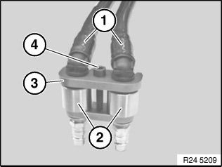
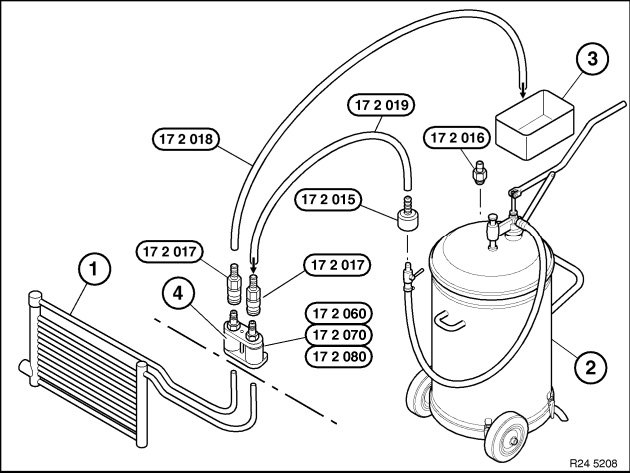

Transmission Cooler: Service and Repair
17 21 500 Rinse gearbox oil cooler and lines of twin clutch gearboxSpecial tools required:
Note:
Follow work steps for:
Installing a new or replacement transmission.
Procedure:
Double twin clutch gearbox removed.
Connect the respective adapters to all oil pipes leaving the double TCT (see description below).
Use quick-release coupling to connect line 17 2 019 from oil collecting unit.
Use quick-release coupling to connect drain line 17 2 018.
Hold and direct open end of drain line into a suitable drip tray.
Using oil collection unit, flush approx. 1 liter of transmission fluid (refer to BMW Service Operating Fluids ) through oil lines and transmission oil cooler.
Reposition quick-release couplings.
Flush oil lines/transmission oil cooler in opposite direction with approx. 1 liter of transmission fluid (refer to BMW Service Operating Fluids ).
Disconnect quick-release couplings.
Remove adapter.
Note:
Dispose of flushing oil correctly.
Do not reuse under any circumstances.

Press hydraulic lines (1) into adapters (2).
Slide clamping bar (3) into guides and secure with screw (4).
Arrangement of flushing apparatus for TCT

1) Transmission-oil cooler with lines
2) Oil collection unit
17 2 015 Connection for oil collection unit (2), manufacturer: Deutsche Tecalemit or
17 2 016 Connection for oil collection unit (2), manufacturer: Horn
17 2 017 Quick-release coupling (2 pieces)
17 2 019 Hose to oil collection unit (2)
3) Oil drip tray
17 2 018 Hose to oil drip tray (3)
4) Adapter with clamping bar
17 2 060 Adapter with clamping bar for aluminum lines and steel lines with aluminum connection (line diameter 12 mm) TCT for engine
17 2 070 Adapter with clamping bar (line diameter 15 mm) TS65TCT for TCT engine